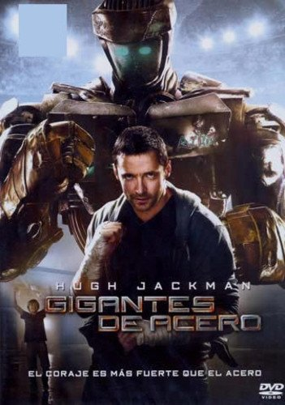

La historia sigue a Charlie Kenton, un exboxeador frustrado que ahora se gana la vida a duras penas como promotor de peleas de robots de mala muerte, acumulando deudas y fracasos. Su vida da un giro inesperado cuando debe hacerse cargo temporalmente de Max, su hijo de once años al que apenas conoce y con quien no tiene ninguna relación. Mientras intentan convivir, Max descubre en un desguace a Atom, un antiguo robot de entrenamiento diseñado para recibir grandes castigos pero con una sorprendente agilidad y un peculiar modo de emulación que le permite copiar los movimientos humanos. Impulsado por el entusiasmo y el instinto tecnológico de su hijo, Charlie decide entrenar a Atom aplicando sus viejos conocimientos de boxeo clásico, lo que inicia una exitosa racha de victorias en el circuito clandestino. A medida que el robot asciende en los rangos de la competición oficial hasta desafiar al campeón invicto, padre e hijo logran construir un vínculo inquebrantable, encontrando en el cuadrilátero una inesperada oportunidad de redención, superación y reconciliación familiar.
REGRESAR